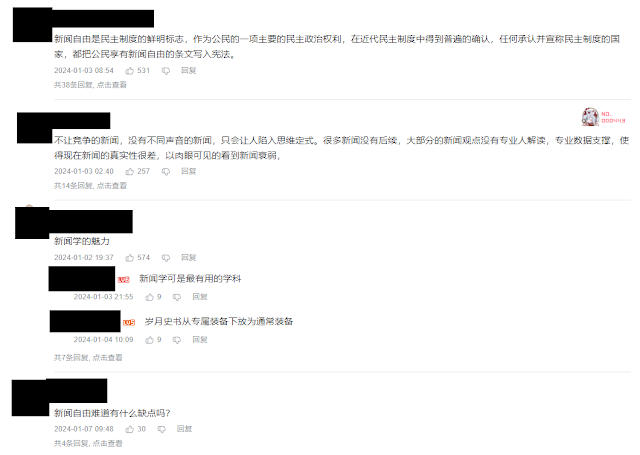
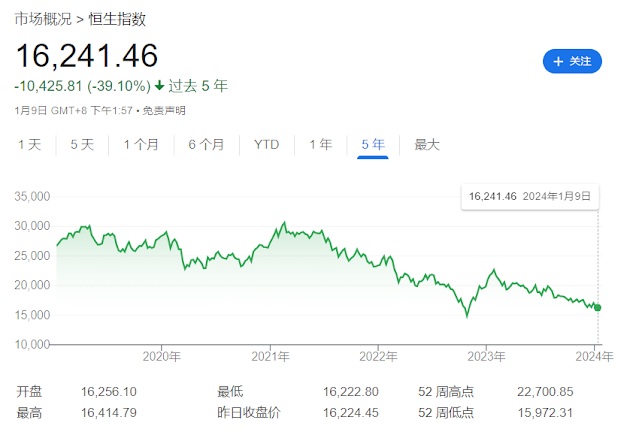
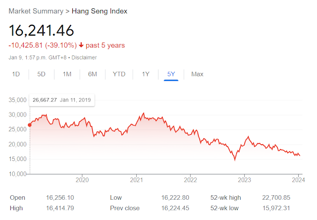

使用贝叶斯方法分析汪文斌“新闻自由”言论 - Using Bayesian methods to analyze Wang Wenbin's remarks on "freedom of the press."
由于本文可能稍有敏感，这里仅展示英文版。
On January 2, 2024, Chinese Foreign Ministry Spokesperson Wang Wenbin stated, "The so-called 'freedom of the press' is merely a tool used by certain countries to attack and slander other nations." This statement has sparked controversy and is considered extreme by many. Let's analyze its credibility using the Bayesian approach.
Introduction to the Principle:
A rational person's method of judging the truth or falsehood of a matter can be viewed as a Bayesian model.
When someone says something that aligns with our understanding of an issue, we tend to strengthen our belief in that issue and the credibility of the person increases in our eyes.
Conversely, when someone says something that contradicts our understanding, two scenarios may occur:
If the person has good credibility and our knowledge of the issue is not extensive, we tend to believe the person and revise our understanding of the issue.
If the person has poor credibility and our knowledge of the issue is extensive, we tend to disbelieve the person and maintain our understanding of the issue.
More often, both occur simultaneously: we update both our judgment of the person's credibility and our understanding of the issue.
Now, let's use the Bayesian method to analyze Wang Wenbin's statement. Here's the original text (in Chinese):
"Some countries smear Hong Kong's press freedom under the guise of a so-called 'Media Freedom Coalition,' attacking the SAR government's legitimate law enforcement and supporting anti-China and Hong Kong-disrupting elements like Jimmy Lai. We are strongly dissatisfied and firmly opposed to this. Cases like Assange and Snowden have already shown the world that the so-called 'freedom of the press' is just a tool for certain countries to attack and slander others, and they don’t care about press freedom when it concerns their own interests. They criticize Hong Kong affairs under the pretense of 'press freedom,' merely out of discontent with the thriving situation in Hong Kong, attempting to prolong their privileges and influence there. But all these efforts are in vain."

This statement contradicts my understanding of 'press freedom' (and also doesn't align with the understanding of most rational Chinese people, as proven in the annex). The question becomes whether to adjust my understanding of press freedom or to reduce the credibility I attribute to Wang Wenbin.
On one hand, I believe in the significance of press freedom. Press freedom is part of freedom of speech, which empowers ordinary people to oversee the government and maintain justice. For instance, the case of the mother of eight children would have been ignored without the continuous exposure by media and news.
Moreover, even if Western countries like the United States and the United Kingdom haven't fully respected press freedom, it doesn't prove that press freedom is meaningless. Imperfection doesn't equal nonexistence.
On the other hand, the credibility of the Chinese government has been continually declining. There are unfulfilled promises (such as not standing idly by during Pelosi's visit to Taiwan), contradictory statements (such as insisting on zero-COVID policy then suddenly opening up), and the constant deletion of videos and discussions on hot topics, which also reduces the government's credibility.
Returning to this press conference, Wang Wenbin could have objectively and politely said, "Let’s all jointly monitor the implementation of press freedom and progress together." Instead, he chose the worst tone, oversimplifying and emotionalizing a complex issue, attacking a view that most people would not question: the significance of press freedom. In this state, according to the Bayesian method, for most people, every extreme statement by Wang Wenbin only continues to lower the government’s credibility, without yielding any positive results.
However, as long as those who believe in the government continue to do so, and those who don't believe can't access normal press conferences or hear normal opinions, then the purpose of muddying the waters is achieved. I can't really understand their purpose.If they want to make most rational people indifferent to international affairs, then they are quite successful.
Annex 1: Evidence that Wang Wenbin's statement, "The so-called 'freedom of the press' is merely a tool used by certain countries to attack and slander other nations," does not align with the understanding of most rational Chinese people. Here, we analyze several common attitudes in Chinese public opinion.
Opinion of Chinese Liberals: Supports Press Freedom
Chinese liberals, who support freedom of speech, also support press freedom. They generally believe that press freedom has its own significance and is not merely "a tool for certain countries to attack other nations."
Opinion of Chinese Marxists 1: News Serves the Ruling Class, China and "Certain Countries" Are Not Different in This Respect
In Marxist theory, media is seen as a tool of ideology, reflecting and serving the interests of the ruling class. From this perspective, Wang's statement is not incorrect.
However, if Marxists believe that news should be a tool of the ruling class, then the attitude expressed in Wang's statement is problematic. As Marxists, they should acknowledge both the Chinese government's suppression of "Hong Kong disruptors" and the U.S. government's actions against "Snowden." Stability trumps all, might makes right.
Opinion of Chinese Marxists 2: Supports Overthrowing Capitalism, Supports Press Freedom
Some Marxists believe that press freedom can only be truly realized under proletarian rule. Under capitalism, media often supports the ruling class. Therefore, they might support press freedom. Others believe that China is clearly not under proletarian rule. Thus, to expose and criticize injustices in Chinese society, freedom of speech is necessary.
Opinion of Chinese Patriots 1: News Should Support National Development and Stability, Supports Wang Wenbin
Some Chinese patriots believe that news should support national development and stability, thus possibly supporting some degree of media regulation and guidance. In this view, press freedom is seen as needing to be within the framework of national interest and social stability. If it threatens national interests, press freedom should not be upheld. This group is the only one supporting Wang's view.
Opinion of Chinese Patriots 2: Supports Civil Society Overseeing the Government, Supports Press Freedom
Another group of Chinese patriots believes that press freedom is vital for the healthy development of civil society and responsible government oversight. For China to progress normally, press freedom is necessary.
Additionally, there are patriots who oppose anything American, but they are not rational and are not considered in this discussion.
Official Attitude of the Chinese Government: Should Support Press Freedom
Press freedom is part of freedom of speech, the right and freedom to express one's opinions. Different eras and political regimes may vary in their support for press freedom. For the current era, the 1948 Universal Declaration of Human Rights states: "Everyone has the right to freedom of opinion and expression... This right includes freedom to hold opinions without interference and to seek, receive and impart information and ideas through any media and regardless of frontiers."
The Universal Declaration of Human Rights was adopted by the United Nations, and although the government of the People's Republic of China did not participate in the vote, it still clearly demonstrates support for the Declaration. Press freedom, included in the Declaration, should also be supported by the Chinese government.
Moreover, China's constitution supports press freedom: "Citizens of the People's Republic of China have the freedom of speech, publication, assembly, association, procession, and demonstration."
Annex 2:
The statement by Wang Wenbin about the "thriving situation in Hong Kong" can also be analyzed using the Bayesian method, with similar results: aside from reducing the government's credibility, it holds little significance.

